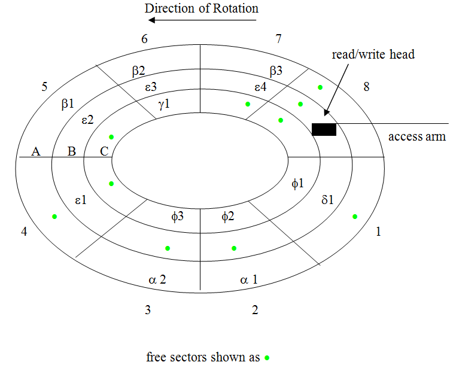
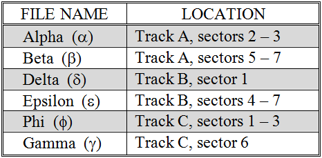
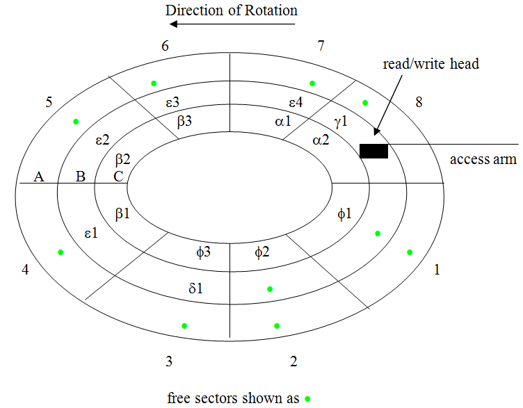
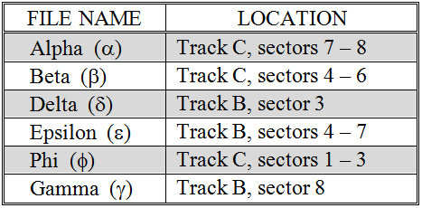

The simplest file organization technique is contiguous storage. Contiguous storage places blocks of records that are logically adjacent to one another into physically adjacent sectors. For example, let’s say that we have a file that consists of 20 student records that we’d like to store in alphabetical order based on last name. The first 12 records could be grouped into one block and the last eight records could be grouped into another block. Contiguous storage would place these two blocks in physically adjacent sectors, such as sectors 2 and 3 of track A.
presents a collection of files stored using the contiguous approach, and illustrates their track and sector locations on a diagram of a three track, 24-sector disk.
 A collection of contiguous files stored on a disk
An advantage of contiguous storage is that an entire file can be retrieved rather quickly. Once the access arm has positioned the read/write head over the appropriate track and the beginning of the first sector of the file spins under the head, there will be no additional seek or rotational delays associated with reading the file. In other words, since the entire file lies in contiguous sectors of the same track, once the read/write head is positioned at the beginning of the file, their will be no more need to move the access arm or wait for sectors to rotate under the head.
While speed of retrieval is a significant advantage for contiguous storage, unfortunately it has a severe disadvantage as well. Contiguous storage can be quite wasteful of space. The reason for this is simple. For a file to be stored on disk it is not only necessary that an adequate number of free sectors be available, it is also imperative that the sectors be located next to one another.
In , ten out of 24 total sectors are unused, yet a three-sector file cannot be stored due to the fact that the necessary number of contiguous sectors is not available. To most people this situation would be unacceptable. How would you feel if you had a disk that was only 58% full, yet refused to store a file that was less than one third the size of “available” space? Rather miffed, I would think.
 A collection of contiguous files after defragging
A disk is said to be fragmented when files are spread throughout the disk, leaving the free space in small scattered “clumps”. One way this fragmentation problem can be overcome is to occasionally defragment, or “defrag”, the disk by moving the location of files so that all of the free sectors can be placed together. Performing a defragmentation operation can be time consuming. Essentially, every file on the disk must be examined and the contents of many files copied to new sectors. shows how the disk of might look after being defragged. Because the process of defragging a disk can literally take many hours to complete, contiguous storage is generally avoided.